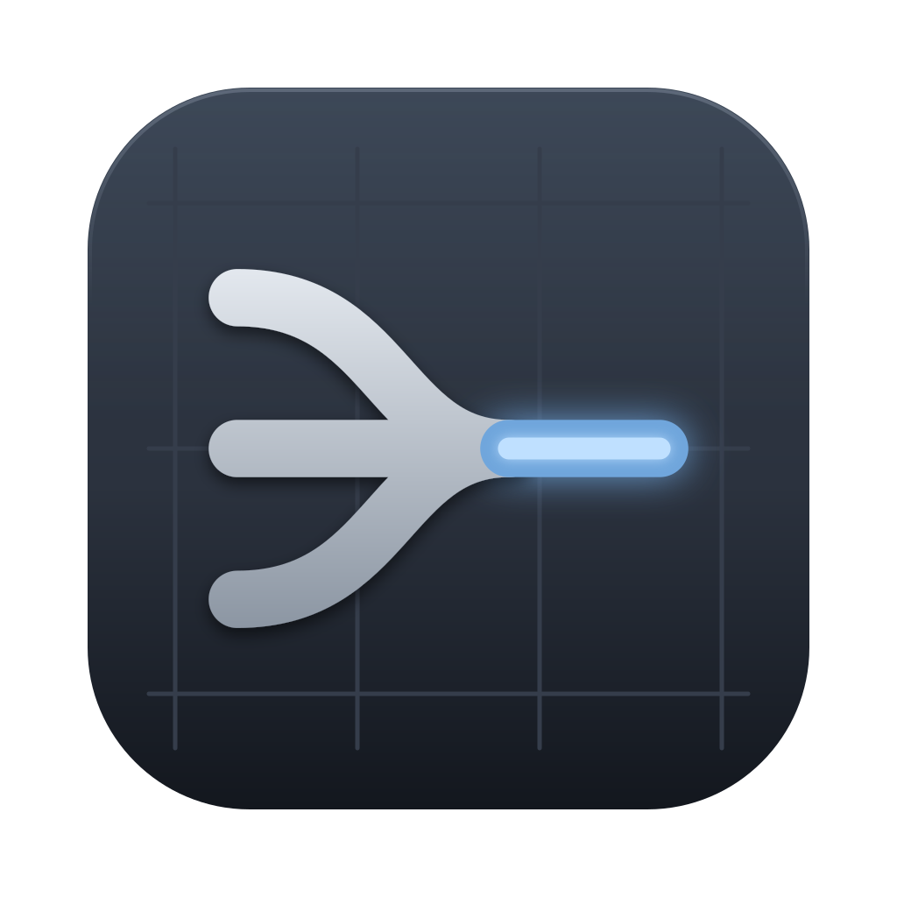
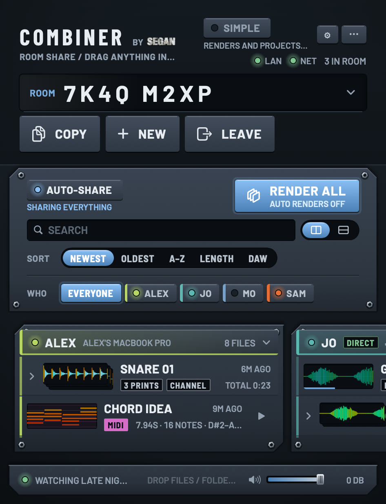

Combiner
Room share / drag anything in or out
Everyone in a session sees and drags each other's bounces, stems, MIDI and Serum patches, whether you're in the same room or in different cities. Type the same room code. It sits in your Dock and your menu bar.

The first time you open it
Combiner is an early build that Apple hasn't checked yet, so macOS asks you to approve it once. After that it opens normally, and updates install without asking again.
- Open Combiner.dmg and drag Combiner into Applications.
- Open Combiner from Applications. macOS says it can't verify it: click Done.
- Open System Settings › Privacy & Security, scroll to the bottom, click Open Anyway next to “Combiner was blocked”, and confirm with your password.
On macOS 14 Sonoma you can instead right-click Combiner in Applications, choose Open, then Open again.
Or install from Terminal
One line that downloads Combiner into Applications and opens it, with no warning to approve:
curl -fsSL https://samsegan.github.io/combiner/install.sh | bash
What it asks for
- Local Network: to find the people in your room who are nearby.
- Folders (Music, Documents, Desktop): to see the projects and bounces you share.
- Accessibility, only for background renders.
Updates
Combiner checks for a new version once a day. When there is one, its menu bar icon gets a dot: right-click it and choose Update to Combiner …. Turn on Update Automatically in the same menu to have updates install by themselves when Combiner quits.